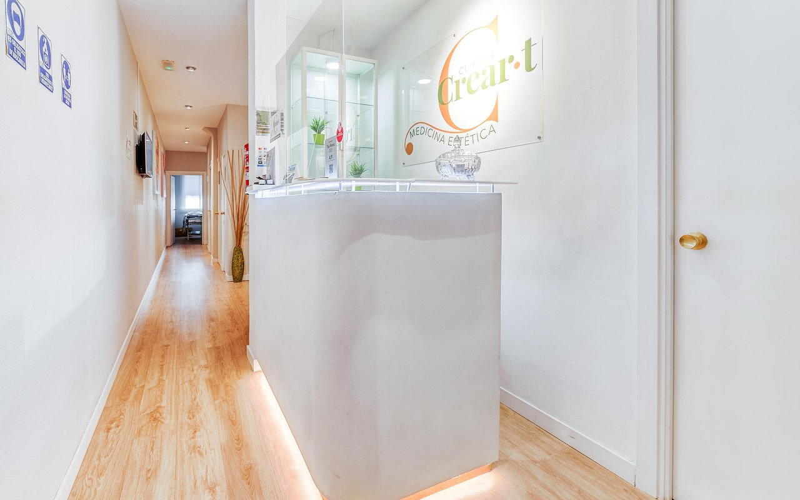
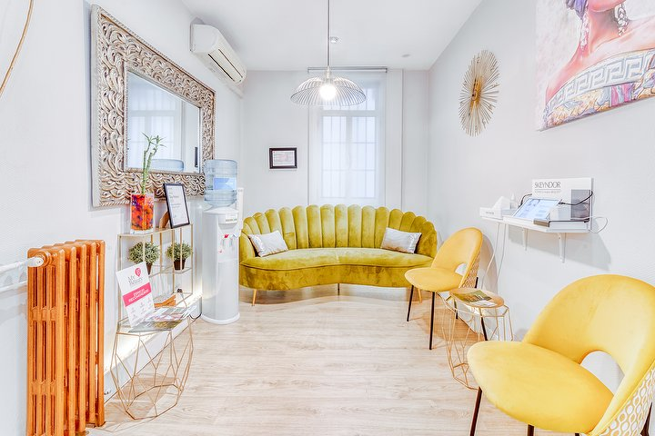

Tu piel, cuidada con tiempo y precisión clínica.
Clínica de estética avanzada en el Barrio de Salamanca. Diagnóstico personalizado con Gabriela Arellano 100% bonificado al iniciar tu tratamiento, aparatología médica y cosmética de alta gama Skeyndor.

NUESTRO MÉTODO TRANSPARENTE
Diagnóstico profesional y compromiso mutuo
En CreArT no realizamos diagnósticos superficiales ni vendemos tratamientos a ciegas. Cada minuto de nuestra consulta está dedicado a tu piel con un protocolo riguroso.
Diagnóstico Clínico y Valoración (20 min)
Una sesión presencial exhaustiva con Gabriela Arellano. Analizamos de cerca tu tipo de piel, grado de hidratación, hábitos o necesidades corporales para diseñar tu pauta personalizada.
- Diagnóstico profesional visual y palpatorio.
- 100% bonificado: El coste de la valoración se descuenta de tu primer tratamiento.
- Presupuesto cerrado sin sorpresas ni ventas forzadas.
Tratamiento en Cabina con Señal de 25€
Cuando reservas tu cita, bloqueamos la cabina y la especialista exclusivamente para ti. Para asegurar tu turno y garantizar la máxima puntualidad, solicitamos una señal de 25€.
- Los 25€ se descuentan íntegramente de tu sesión o producto en clínica.
- Garantiza cabina desinfectada y tiempo reservado sin esperas.
- Cambio o reprogramación sin coste con 24h de aviso previo.
En Clínica CreArT valoramos el tiempo de nuestras pacientes tanto como el de nuestras especialistas. Por respeto a la agenda y al resto de personas en lista de espera, aplicamos una política clara y honesta:
Si asistes a tu cita o necesitas reprogramar avisando con al menos 24 horas de antelación, tu señal de 25€ se descuenta al 100% de tu tratamiento o se traslada a la nueva fecha sin ningún recargo.
Si no acudes a tu cita o cancelas con menos de 24 horas, la señal de 25€ se retiene y no es reembolsable, para compensar el bloqueo de sala y el tiempo reservado de la especialista.
CATÁLOGO Y PRECIOS
Tratamientos pensados para cada necesidad
Precios transparentes y aparatología de vanguardia. La valoración previa te ayuda a elegir el protocolo adecuado.

EQUIPO HUMANO
Gabriela Arellano y su equipo
Gabriela Arellano, oficial de estética y titular del centro, dirige un equipo especializado completado por Daniela y por Valeria, nuestra asistente de atención y recepción.
Gabriela Arellano
Oficial de Estética y Titular del Centro · Especialista Skeyndor
Daniela
Auxiliar de Estética Médica & Tratamientos Corporales
Valeria
Asistente Digital & Recepción Clínica · Orientación 24/7
OPINIONES REALES
La confianza de nuestras clientas
4.9 sobre 5 en más de 1.470 opiniones verificadas en Treatwell.
“Gabriela es estupenda. Se toma el tiempo de explicarte qué le hace falta a tu piel antes de tocar nada. Recomendable al 100%.”
“Un trabajo increíble cada vez. He ido ya cinco veces para tratamientos faciales y la diferencia en luminosidad se nota al instante.”
“Puntualidad británica, cabinas súper limpias y un trato humano exquisito. En el Barrio de Salamanca no hay sitio con mejor relación calidad-precio.”
DÓNDE ENCONTRARNOS
En pleno Barrio de Salamanca
Horarios de Apertura
| Lunes - Martes | 11:00 – 19:00 |
| Miércoles | 10:00 – 19:00 |
| Jueves - Viernes | 10:00 – 20:00 |
| Sábado | 10:00 – 14:00 |
| Domingo | Cerrado |